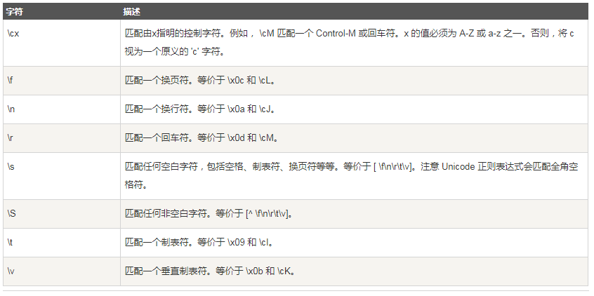
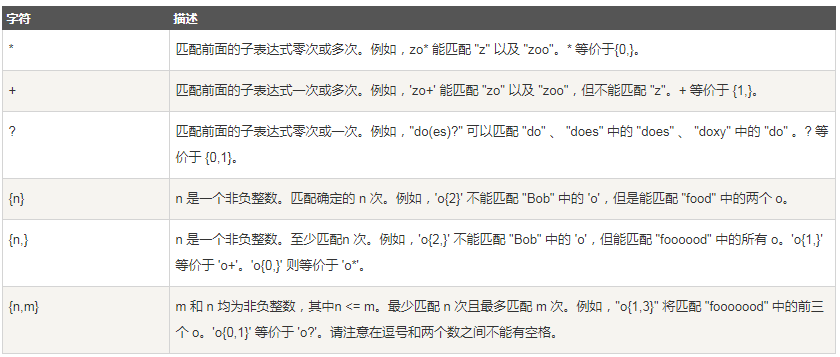
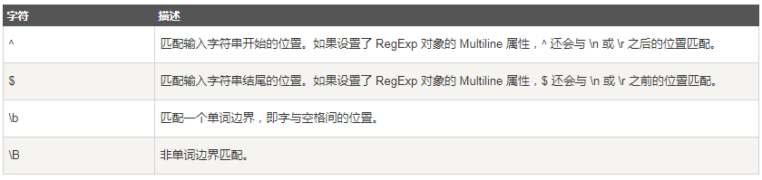

分享人：吉海鹏
目录
1.背景介绍
2.知识剖析
3.常见问题
4.解决方案
5.编码实战
6.扩展思考
7.参考文献
8.更多讨论
正则表达式(Regular Expression)是一种文本模式，包括普通字符（例如，a 到 z 之间的字母）和特殊字符（称为"元字符"）。 正则表达式使用单个字符串来描述、匹配一系列匹配某个句法规则的字符串。
一、语法
正则表达式的组件可以是单个的字符、字符集合、字符范围、字符间的选择或者所有这些组件的任意组合
正则表达式是由普通字符（例如字符 a 到 z）以及特殊字符（称为"元字符"）组成的文字模式。模式描述在搜索文本时要匹配的一个或多个字符串。正则表达式作为一个模板，将某个字符模式与所搜索的字符串进行匹配。
二、字符
1.特殊字符
所谓特殊字符，就是一些有特殊含义的字符，若要匹配这些特殊字符，必须首先使字符"转义"，即"\"
2.普通字符
普通字符包括没有显式指定为元字符的所有可打印和不可打印字符。这包括所有大写和小写字母、所有数字、所有标点符号和一些其他符号
3.非打印字符
4.限定符
5.定位符
如何使用
参考一： 菜鸟教程 https://www.runoob.com/regexp/regexp-intro.html
答：测试字符串内的模式。
例如，可以测试输入字符串，以查看字符串内是否出现电话号码模式或信用卡号码模式。这称为数据验证。
替换文本。
可以使用正则表达式来识别文档中的特定文本，完全删除该文本或者用其他文本替换它。
基于模式匹配从字符串中提取子字符串。
可以查找文档内或输入域内特定的文本。
感谢大家观看
by: 吉海鹏